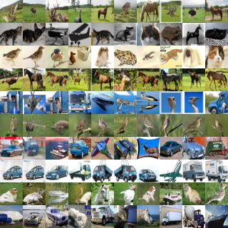

互信息：无监督提取特征
本文是对苏剑林的深度学习的互信息：无监督提取特征的学习总结,主要是关于Deep INFOMAX的论文复现.
互信息
大概是需要有一个标准来衡量两个值统一出现的概率,如果这个概率很大,说明两个值倾向于共同出现,如果这个概率很小,就代表他们刻意回避对方。这个值定义为点互信息(Pointwise Mutual Information，PMI): \[ \begin{aligned} PMI(x,z)&=p(x,z)\log\frac{p(x,z)}{p(x)p(z)} \end{aligned} \]
因为\(\log\)的原因，所以两个多元变量的相关度可以被累加：
\[ \begin{aligned} I(X,Z)&=\sum^k_{i=1}\sum^l_{j=1}p(x_i,z_j) \log\frac{p(x_i,z_j)}{p(x_i)p(z_j)} \ \ \ \ \text{离散型}\\ &=\int_Z\int_X p(x,z)\log\frac{p(x,z)}{p(x)p(z)}\ dx\ dz\ \ \ \ \text{连续型} \end{aligned} \]
细心的小伙伴可以看出，这个不就是KL散度么,如下： \[
\begin{aligned}
I(X,Z)&=KL(p(x,z)\|p(x)p(z))
\end{aligned}
\] 且假设\(p(x)\)和\(p(z)\)相互独立时，则： \[
\begin{aligned}
\because p(x|z)&=\frac{p(x,z)}{p(z)}\\
\therefore I(X,Z)&=\int_Z\int_X\ p(z) p(x|z)\log\frac{p(x|z)}{p(x)}\ dx\ dz\\
&=\mathbb{E}[KL(\ p(x|z)\ \| \ p(z)\ )]\\
\text{或}\\
\because p(z|x)&=\frac{p(x,z)}{p(x)}\\
\therefore I(X,Z)&=\int_Z\int_X\ p(x) p(z|x)\log\frac{p(z|x)}{p(z)}\ dx\ dz\\
&=\mathbb{E}[KL(\ p(z|x)\ \| \ p(x)\ )]
\end{aligned}
\]
自编码器
通常自编码器都配有一个解码器，使用自编码对原始数据进行解析并保留尽可能多的重要特征，那么如何验证自编码器所解析的特征是最有效的呢？
关于重构
传统思想是使用解码器将去重构原始图像，但使用低维编码重构原图的结果通常是很模糊的。比如我们都能轻松辨认一个物体是什么，但是让我们将他完整地画出来是很难的，这就说明对于任务来说，最合理的特征并不能一定能完成图像重构。
最大化互信息
互信息引出
既然重构不是好特征的必要条件。那好特征的基本原则应当是能够从整个数据集中辨别出该样本出来，也就是说，提取出该样本（最）独特的信息。如何衡量提取出来的信息是该样本独特的呢？我们用互信息来衡量。
用\(X\)表示原始图像的集合，\(x\in X\)表示其中一图像，\(\tilde{p}(x)\)表示采样所得\(x\)的分布，\(Z\)为编码向量集合，\(z\in Z\)表示其中一编码向量，\(p(z|x)\)表示\(x\)所产生的编码向量\(z\)的分布，我们假设它为正态分布且\(\tilde{p}(x)\)和\(p(z)\)相互独立，即 \[ \begin{aligned} p(z) = \int p(z|x)\tilde{p}(x)\ dx \end{aligned} \]
接下来使用互信息来表示\(X，Z\)的相关性： \[ \begin{aligned} I(X,Z) &= \iint p(z,x)\log \frac{p(z,x)}{\tilde{p}(x)p(z)}\ dx\ dz \\ &= \iint p(z,x)\log \frac{p(z|x)}{p(z)}\ dx\ dz\\ &= \iint p(z|x)\tilde{p}(x)\log \frac{p(z|x)}{p(z)}\ dx\ dz \end{aligned} \]
那么接下来我们就要使互信息尽可能的大，来得到一个好的特征编码器： \[ \begin{aligned} p(z|x) = -\min_{p(z|x)} I(X,Z) \end{aligned} \]
互信息越大就代表\(\log \frac{p(z|x)}{p(z)}\)越大，说明\(p(z|x)\gg p(x)\),则此时的解码出向量\(p(z|x)\)和\(p(x)\)同时出现的概率越大，那就代表编码器找到了专属于\(x\)的那个\(z\)，这不就是我们所需要的独特信息么。
先验分布
前面提到，相对于自编码器，变分自编码器同时还希望隐变量服从标准正态分布的先验分布，这有利于使得编码空间更加规整，甚至有利于解耦特征，便于后续学习。因此，在这里我们同样希望加上这个约束。
关于服从于标准正态就可以有利于解耦特征，我暂时没有找到相关的资料，这里是摘录的原文。利用在VAE中思路(参考VAE直观推导)添加KL散度约束来实现，假设\(q(z)\sim N(0,1)\),则： \[
KL(q(z)\|p(z))=\int p(z)\log\frac{p(z)}{q(z)}\ dz
\]
化简先验分布
将KL散度约束加权并与互信息约束混合得： \[
\begin{aligned}
p(z|x) &= \min_{p(z|x)}\left\{- I(X,Z) + \lambda KL(p(z)\Vert q(z))\right\}\\
=\min_{p(z|x)}&\left\{- I(X,Z)+ \lambda\int p(z)\log \frac{p(z)}{q(z)}\ dz\right\} \\
=\min_{p(z|x)}&\left\{- I(X,Z)+ \lambda\left(\int p(z)\log \left(\frac{p(z|x)}{q(z)}\times\frac{p(z)}{p(z|x)}\right)\ dz\right)\right\} \\
=\min_{p(z|x)}&\left\{- I(X,Z)+ \lambda\left(\int p(z)\log\frac{p(z|x)}{q(z)} \ dz-\int p(z)\log\frac{p(z|x)}{p(z)} \ dz\right)\right\} \\
=\min_{p(z|x)}&\left\{- \iint p(z)\log \frac{p(z|x)}{p(z)}\ dx\ dz+ \lambda\left(\int p(z)\log\frac{p(z|x)}{q(z)} \ dz-\int p(z)\log\frac{p(z|x)}{p(z)} \ dz\right)\right\} \\
=\min_{p(z|x)}&\left\{- (1+\lambda)\iint p(z)\log \frac{p(z|x)}{p(z)}\ dx\ dz+ \lambda\int p(z)\log\frac{p(z|x)}{q(z)} \ dz\right\} \\
=\min_{p(z|x)}&\left\{\iint p(z|x)\tilde{p}(x) \left[- (1+\lambda)\log\frac{p(z|x)}{p(z)}+\lambda\log\frac{p(z|x)}{q(x)}\right]\ dx\ dz \right\} \\
=\min_{p(z|x)}&\left\{-(1+\lambda)\cdot I(X,Z)+\lambda\cdot \mathbb{E}_{x\sim\tilde{p}(x)}\left[KL(p(z|x)||q(z))\right] \right\} \\
=\min_{p(z|x)}&\left\{-(1+\lambda)\cdot KL(p(z|x)\tilde{p}(x)\| p(z)\tilde{p}(x)) +\lambda\cdot \mathbb{E}_{x\sim\tilde{p}(x)}\left[KL(p(z|x)||q(z))\right] \right\}
\end{aligned}
\]
现在发现先验分布在化简后被去除了，并且约束函数中后面一部分就是VAE中的约束，比较容易实现，接下来考虑如何构建互信息约束。
互信息转化
在第一部分提到了互信息可以化为KL散度的形式：
\[ \begin{aligned} I(X,Z) =& \iint p(z|x)\tilde{p}(x)\log \frac{p(z|x)\tilde{p}(x)}{p(z)\tilde{p}(x)}dxdz\\ =& KL(p(z|x)\tilde{p}(x)\Vert p(z)\tilde{p}(x)) \end{aligned} \]
这个形式展示了互信息的本质含义：\(p(z|x)\tilde{p}(x)\)表示变量\(x,z\)的联合分布，\(p(z)\tilde{p}(x)\)表示随机抽取一个\(x\)和一个\(z\)时的分布(假设不相关)，而互信息则是这两个分布的KL散度，那么最大化互信息意思就是拉大这两个分布间的距离。
一个严重问题是KL散度理论上是无上界的，我们不能去最大化一个无上界的量。为了有效优化，抓住
最大化互信息就是拉大\(p(z|x)\tilde{p}{x}\)和\(p(z)\tilde{p}(x)\)之间的距离
这个核心要点，我们可以选择其他的度量函数来进行约束，可以选择JS散度和Hellinger距离。这里使用JS散度：
\[ \begin{aligned} JS(P,Q) = \frac{1}{2}KL\left(P\left\Vert\frac{P+Q}{2}\right.\right)+\frac{1}{2}KL\left(Q\left\Vert\frac{P+Q}{2}\right.\right) \end{aligned} \]
JS散度同样衡量了两个分布的距离，但他具备上界\(\frac{1}{2}\log2\)，我们最大化他的时候，也可以起到最大化互信息的效果，下面将JS散度代入约束函数。
\[ \begin{aligned} p(z|x) =\min_{p(z|x)}&\left\{-(1+\lambda)\cdot JS(p(z|x)\tilde{p}(x)\| p(z)\tilde{p}(x)) +\lambda\cdot \mathbb{E}_{x\sim\tilde{p}(x)}\left[KL(p(z|x)||q(z))\right] \right\} \end{aligned} \]
但是还是存在一个\(p(z)\)让我们无法解决，下面就要把他解决：
变分推断
参考f-GAN简介：GAN模型的生产车间中的f散度局部变分推断中的距离定义为：
\[ \begin{aligned}\mathcal{D}_f(P\Vert Q) =& \max_{T}\int q(x) \left[\frac{p(x)}{q(x)}T\left(\frac{p(x)}{q(x)}\right)-g\left(T\left(\frac{p(x)}{q(x)}\right)\right)\right]\ dx\\ =& \max_{T}\int\left[p(x)\cdot T\left(\frac{p(x)}{q(x)}\right)-q(x)\cdot g\left(T\left(\frac{p(x)}{q(x)}\right)\right)\right]\ dx \\ \text{记}T\left(\frac{p(x)}{q(x)}\right)\text{为}&T(x)\text{得}\\ \mathcal{D}_f(P\Vert Q) =& \max_{T}\Big(\mathbb{E}_{x\sim p(x)}[T(x)]-\mathbb{E}_{x\sim q(x)}[g(T(x))]\Big) \end{aligned} \]
利用上面这个公式，我们可以进行f散度估计，意思是：分别从两个分布中采样，然后分别计算\(T(x)\)和\(g(T(x))\)的均值，优化函数\(T(x)\)使得他们的差值尽可能的大，最终的结果即为f散度的近似值了。显然\(T(x)\)可以用神经网络进行拟合，我们优化此函数就是优化神经网络参数。
将上述公式代入JS散度中得： \[
\begin{aligned}
&JS(P,Q) \\
=& \max_{T}\Big(\mathbb{E}_{x\sim p(x)}[\log \sigma(T(x))] + \mathbb{E}_{x\sim q(x)}[\log(1-\sigma(T(x))]\Big) \\
\\
&JS\big(p(z|x)\tilde{p}(x), p(z)\tilde{p}(x)\big)\\
=& \max_{T}\Big(\mathbb{E}_{(x,z)\sim p(z|x)\tilde{p}(x)}[\log \sigma(T(x,z))] + \mathbb{E}_{(x,z)\sim p(z)\tilde{p}(x)}[\log(1-\sigma(T(x,z))]\Big)
\end{aligned}
\]
注意:这里的\(1-\sigma(T(x))\)是根据此前文章中的变分推断所计算的激活函数\(g\)，具体请参考文章
并且现在这个约束函数可以看成负采样估计：引入一个判别网络\(\sigma(T(x,z))\)，\(x\)和对应的\(z\)看成一个正样本对，\(x\)与其他一个随机抽取的\(z\)作为负样本对，然后最大化似然函数，等价于最小化交叉熵。终于通过负采样的方式，得到了一种估计JS散度的方案，从而解决了互信息的最大化问题，得到具体的loss为：
\[ \begin{aligned} p(z|x),T(x,z)=\\ \min_{p(z|x),T(x,z)}\Big\{-&(1+\lambda)\cdot\Big(\mathbb{E}_{(x,z)\sim p(z|x)\tilde{p}(x)}[\log \sigma(T(x,z))] + \mathbb{E}_{(x,z)\sim p(z)\tilde{p}(x)}[\log(1-\sigma(T(x,z))]\Big)\\ +&\lambda\cdot \mathbb{E}_{x\sim\tilde{p}(x)}[KL(p(z|x)\Vert q(z))]\Big\} \end{aligned} \]
下面开始实际实验。
从全局到局部
在实际实验中，如何去践行负采样呢？
batch内负采样
我们可以对这个batch中样本对顺序进行shuffle，shuffle前的样本对为正样本，shuffle之后的样本对为负样本。
局部负采样
上面的做法，实际上就是考虑了整张图片之间的关联，但是我们知道，图片的相关性更多体现在局部中（也就是因为这样所以我们才可以对图片使用CNN）。换言之，图片的识别、分类等应该是一个从局部到整体的过程。因此，有必要把“局部互信息”也考虑进来。
一般的CNN编码过程： \[ \text{原始图片}x\xrightarrow{\text{多个卷积层}} h\times w\times c\text{的特征} \xrightarrow{\text{卷积和全局池化}} \text{固定长度的向量}z \]
我们已经考虑到了\(x\)和\(z\)的关联，那么中间层特征(feature map)和\(z\)的关联呢？把中间层向量记为\(\{C_{ij}(x)|i=1,2,\dots,h;j=1,2,\dots,w\}\),一共\(h\times w\)个向量与\(z_x\)的互信息，称为局部互信息。
那么我们要构建出一个局部的互信息估算网络，首先把每个通道的向量与\(z_x\)拼接得到\([C_{ij}(x),z_x]\),相当于得到了一个更大的feature map，然后对这个feature map用多个1x1的卷积层来作为局部互信息的估算网络\(T_{local}\)。负样本的选取方法也是用在batch内随机打算的方案。
加入局部互信息的总loss为： \[
\begin{aligned}
&p(z|x),T_1(x,z),T_2(C_{ij}, z) \\
=&\min_{p(z|x),T_1,T_2}\Big\{-\alpha\cdot\Big(\mathbb{E}_{(x,z)\sim p(z|x)\tilde{p}(x)}[\log \sigma(T_1(x,z))] + \mathbb{E}_{(x,z)\sim p(z)\tilde{p}(x)}[\log(1-\sigma(T_1(x,z))]\Big)\\
&\qquad-\frac{\beta}{hw}\sum_{i,j}\Big(\mathbb{E}_{(x,z)\sim p(z|x)\tilde{p}(x)}[\log \sigma(T_2(C_{ij},z))] + \mathbb{E}_{(x,z)\sim p(z)\tilde{p}(x)}[\log(1-\sigma(T_2(C_{ij},z))]\Big)\\
&\qquad+\gamma\cdot \mathbb{E}_{x\sim\tilde{p}(x)}[KL(p(z|x)\Vert q(z))]\Big\}
\end{aligned}
\]
注意：上面的几部分的损失权重分别设置为\(\alpha,\beta,\gamma\)。
代码实现
在Tensorflow 1.14下运行：
import numpy as np
import glob
import imageio
from tensorflow.python.keras.models import Model
from tensorflow.python.keras.layers import *
import tensorflow.python as tf
from tensorflow.python.keras import backend as K
from tensorflow.python.keras.optimizers import Adam
from tensorflow.python.keras.datasets import cifar10
from tensorflow.python.keras.utils import plot_model
from pathlib import Path
from termcolor import colored
config = tf.ConfigProto()
config.gpu_options.allow_growth = True
K.set_session(tf.Session(config=config))
(x_train, y_train), (x_test, y_test) = cifar10.load_data()
x_train = x_train.astype('float32') / 255 - 0.5
x_test = x_test.astype('float32') / 255 - 0.5
y_train = y_train.reshape(-1)
y_test = y_test.reshape(-1)
img_dim = x_train.shape[1]
z_dim = 256 # 隐变量维度
α = 0.5 # 全局互信息的loss比重
β = 1.5 # 局部互信息的loss比重
γ = 0.01 # 先验分布的loss比重
# 编码器（卷积与最大池化）
x_in = Input(shape=(img_dim, img_dim, 3))
x = x_in
for i in range(3):
x = Conv2D(z_dim // 2**int(2 - i), kernel_size=(3, 3), padding='SAME')(x)
x = BatchNormalization()(x)
x = LeakyReLU(0.2)(x)
x = MaxPooling2D((2, 2))(x)
feature_map = x # 截断到这里，认为到这里是feature_map（局部特征）
feature_map_encoder = Model(x_in, x)
plot_model(feature_map_encoder, to_file='feature_map_encoder.png')
for i in range(2):
x = Conv2D(z_dim,
kernel_size=(3, 3),
padding='SAME')(x)
x = BatchNormalization()(x)
x = LeakyReLU(0.2)(x)
x = GlobalMaxPooling2D()(x) # 全局特征
z_μ = Dense(z_dim)(x) # 均值，也就是最终输出的编码
z_log_σ = Dense(z_dim)(x) # 方差，这里都是模仿VAE的
encoder = Model(x_in, z_μ) # 总的编码器就是输出z_μ
plot_model(encoder, to_file='encoder.png')
# 重参数技巧
def sampling(args):
z_μ, z_log_σ = args
u = K.random_normal(shape=K.shape(z_μ))
return z_μ + K.exp(z_log_σ / 2) * u
# 重参数层，相当于给输入加入噪声
z_samples = Lambda(sampling)([z_μ, z_log_σ])
prior_kl_loss = - 0.5 * K.mean(1 + z_log_σ - K.square(z_μ) - K.exp(z_log_σ))
# shuffle层，打乱第一个轴
def shuffling(x):
idxs = K.arange(0, K.shape(x)[0])
idxs = tf.random_shuffle(idxs)
return K.gather(x, idxs)
""" 构建正负样本对 """
# 与随机采样的特征拼接（全局）
z_shuffle = Lambda(shuffling)(z_samples)
z_z_true = Concatenate()([z_samples, z_samples]) # 这就是正样本对
z_z_false = Concatenate()([z_samples, z_shuffle]) # 这就是负样本对
# 与随机采样的特征拼接（局部）
feature_map_shuffle = Lambda(shuffling)(feature_map)
z_samples_map = Reshape((4, 4, z_dim))(RepeatVector(4 * 4)(z_samples)) # 重复z样本到H×W次并reshape
z_f_true = Concatenate()([z_samples_map, feature_map]) # 拼接出局部正样本
z_f_false = Concatenate()([z_samples_map, feature_map_shuffle]) # 拼接出局部负样本
# 全局互信息判别器
z_in = Input(shape=(z_dim * 2,))
z = z_in
z = Dense(z_dim, activation='relu')(z)
z = Dense(z_dim, activation='relu')(z)
z = Dense(z_dim, activation='relu')(z)
z = Dense(1, activation='sigmoid')(z)
GlobalDiscriminator = Model(z_in, z)
plot_model(GlobalDiscriminator, to_file='GlobalDiscriminator.png')
z_z_true_scores = GlobalDiscriminator(z_z_true) # 使用判别器判别正样本对
z_z_flase_scores = GlobalDiscriminator(z_z_false) # 使用判别器判别负样本对
global_info_loss = - K.mean(K.log(z_z_true_scores + 1e-6) + K.log(1 - z_z_flase_scores + 1e-6))
# 局部互信息判别器
z_in = Input(shape=(None, None, z_dim * 2))
z = z_in
z = Dense(z_dim, activation='relu')(z)
z = Dense(z_dim, activation='relu')(z)
z = Dense(z_dim, activation='relu')(z)
z = Dense(1, activation='sigmoid')(z)
LocalDiscriminator = Model(z_in, z)
plot_model(LocalDiscriminator, to_file='LocalDiscriminator.png')
z_f_true_scores = LocalDiscriminator(z_f_true) # 使用判别器判别正样本对
z_f_false_scores = LocalDiscriminator(z_f_false) # 使用判别器判别负样本对
local_info_loss = - K.mean(K.log(z_f_true_scores + 1e-6) + K.log(1 - z_f_false_scores + 1e-6))
# 用来训练的模型
model_train = Model(x_in, [z_z_true_scores, z_z_flase_scores, z_f_true_scores, z_f_false_scores])
model_train.add_loss(α * global_info_loss + β * local_info_loss + γ * prior_kl_loss)
model_train.compile(optimizer=Adam(1e-3))
if not Path('cifar10.h5').exists():
model_train.fit(x_train, epochs=50, batch_size=64)
model_train.save_weights('cifar10.h5')
else:
model_train.load_weights('cifar10.h5')
# 输出编码器的特征
zs = encoder.predict(x_train, verbose=True)
print(colored('z mean', 'green'), zs.mean()) # 查看均值（简单观察先验分布有没有达到效果）
print(colored('z std', 'green'), zs.std()) # 查看方差（简单观察先验分布有没有达到效果）
# 随机选一张图片，输出最相近的图片
# 可以选用欧氏距离或者cos值
def sample_knn(path):
n = 10
topn = 10
figure1 = np.zeros((img_dim * n, img_dim * topn, 3))
figure2 = np.zeros((img_dim * n, img_dim * topn, 3))
zs_ = zs / (zs**2).sum(1, keepdims=True)**0.5
for i in range(n):
one = np.random.choice(len(x_train))
idxs = ((zs**2).sum(1) + (zs[one]**2).sum() - 2 * np.dot(zs, zs[one])).argsort()[:topn]
for j, k in enumerate(idxs):
digit = x_train[k]
figure1[i * img_dim: (i + 1) * img_dim,
j * img_dim: (j + 1) * img_dim] = digit
idxs = np.dot(zs_, zs_[one]).argsort()[-n:][::-1]
for j, k in enumerate(idxs):
digit = x_train[k]
figure2[i * img_dim: (i + 1) * img_dim,
j * img_dim: (j + 1) * img_dim] = digit
figure1 = (figure1 + 1) / 2 * 255
figure1 = np.clip(figure1, 0, 255)
figure2 = (figure2 + 1) / 2 * 255
figure2 = np.clip(figure2, 0, 255)
imageio.imwrite(path + '_l2.png', figure1)
imageio.imwrite(path + '_cos.png', figure2)
sample_knn('test')效果
余弦距离KNN采样

欧式距离KNN采样

思考
我个人是想把这个使用在监督学习中，但是转念一想，其实在监督学习中不是已经在优化\(y\)与对应\(x\)之间的最大互信息了么？可以看到这里的这里构建正负样本对后所使用的损失函数，其实际就是交叉熵。